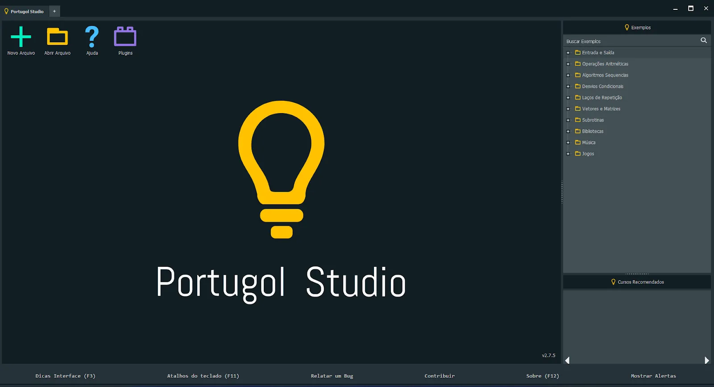
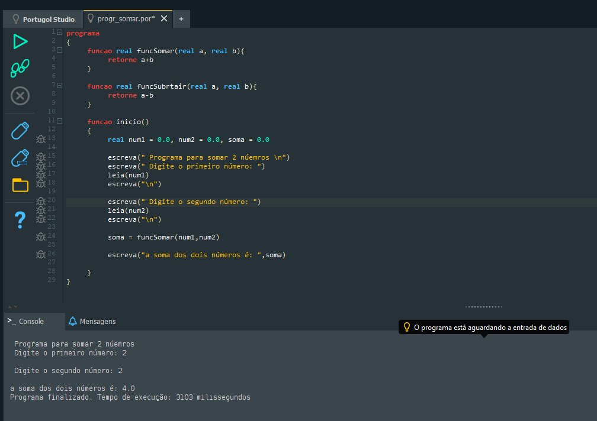
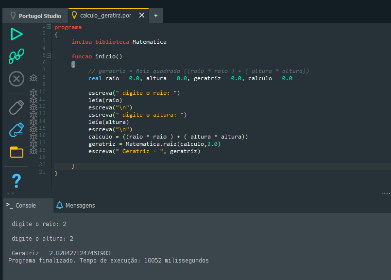
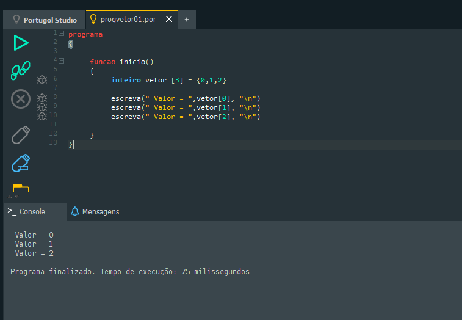
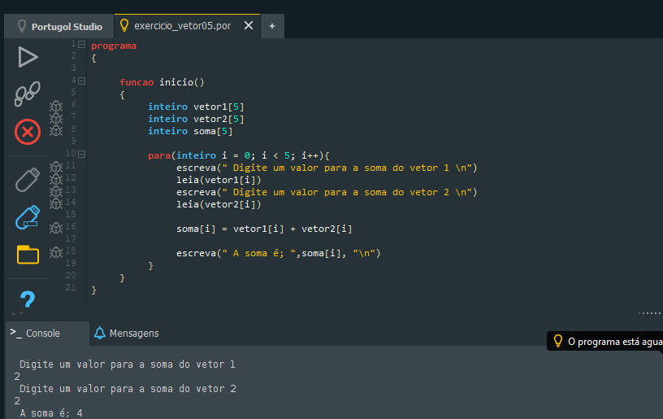
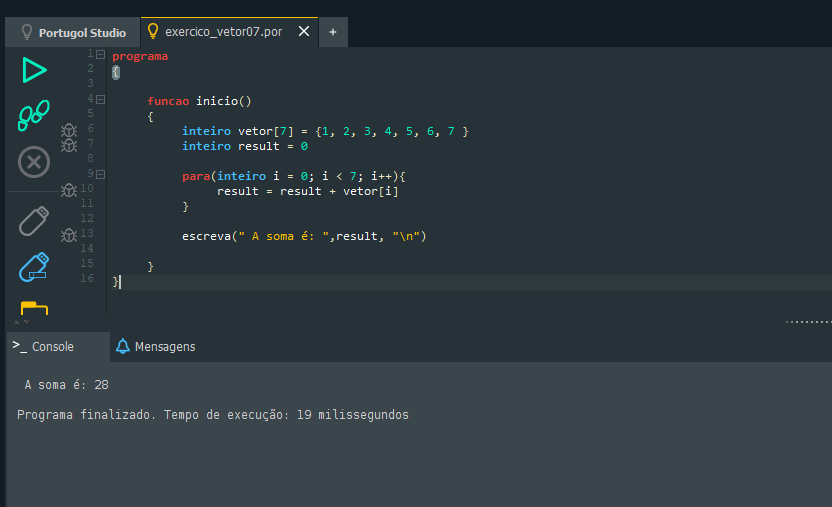

Lógica Computacional
1. O que são Fluxogramas? Simbologia Básica
Fluxogramas são diagramas usados para representar processos, algoritmos e fluxos de decisão.
Simbologia básica:
● Terminal – Início/Fim
● Processo – Ação
● Decisão – Condição
● Entrada/Saída – Dados
● Conectores – Continuação do fluxo
2. O que são Algoritmos? Onde são usados?
Algoritmos são sequências de passos lógicos para resolver problemas.
Usados em:
• Aplicativos
• Jogos
• Robótica
• Automação
• Software em geral
3. O que é Portugol? O que é o Portugol Studio?
Portugol: uma linguagem em português usada para aprender lógica.
Portugol Studio: IDE usada para escrever e testar algoritmos.
Espaço para foto do Portugol Studio:
4. Variáveis e Constantes
Variáveis: valores que mudam
Ex: idade = 17
Constantes: valores fixos
Ex: PI = 3.14
5. Tipos de Dados
• Booleano
• Caractere
• Cadeia (string)
• Inteiro
• Real
• Vetor (lista)
6. Programas em Portugol com Funções
Espaço para print 1:

Espaço para print 2:
Espaço para print 3:
7. Programas em Portugol com Vetores
Espaço para print 1:
Espaço para print 2:
Espaço para print 3:
